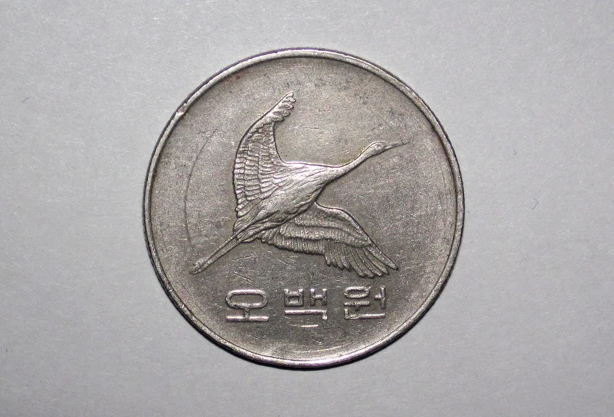

한국은행 금융통화위원회가 오는 26일 올해 마지막 통화정책방향 회의를 연다. 현재 연 3.00%인 기준금리를 0.25%포인트 올려 3.25%로 조정할 것이라는 관측이 시장에서 압도적이다. 지난 10월 회의에서 한 차례 동결하며 숨을 고른 한은이 다시 긴축의 고삐를 죌지, 최근 급락한 증시 상황을 고려해 속도를 조절할지에 관심이 쏠린다. 이번 결정은 연말 대출금리와 환율, 주식시장 흐름에 두루 영향을 줄 수 있어 가계와 기업 모두 촉각을 곤두세우고 있다.
시장 전문가들의 예상은 한쪽으로 모였다. 국내 증권사 10곳을 대상으로 한 조사에서 전원이 이번 회의에서 0.25%포인트 인상을 예상했다. 이 가운데 KB증권과 한국투자증권은 금통위원 1명 정도가 동결 의견을 낼 것으로 봤고, 키움증권·신한투자증권·하나증권 등은 만장일치 인상을 점쳤다. 별도로 진행된 채권시장 전문가 10명 대상 설문에서도 모두 인상을 예상했으며, 이 중 7명은 만장일치 결정을 내다봤다.
인상 전망의 핵심 근거는 물가다. 반도체 산업 호황으로 경기가 탄탄한 흐름을 보이는 가운데 물가 상승률이 한은 목표치를 크게 웃도는 상황이 이어지고 있어, 통화정책을 더 조여야 한다는 판단이 우세하다. 이번 회의에서는 수정 경제전망도 함께 발표되는데, 내년 성장률을 예상한 증권사 8곳은 모두 한은의 8월 전망치(2.9%)를 웃도는 3%대를 제시했다. 성장과 물가가 함께 높은 국면이라는 점이 인상 쪽에 힘을 싣는 셈이다.
관심은 이번 인상이 마지막이 될지로 옮겨가고 있다. 전문가 대다수는 한은이 내년 상반기 중 한 차례 더 금리를 올려 이번 긴축 국면의 최종금리가 연 3.50%에 이를 것으로 내다봤다. 추가 인상 시점으로는 내년 1분기가 가장 많이 꼽혔다. 글로벌 투자은행 씨티도 이달과 내년 2월 회의에서 각각 0.25%포인트씩 올려 최종금리가 3.5%가 될 것이라는 기존 전망을 유지했다.
변수는 금융시장의 충격이다. 코스피는 지난 21일 하루 만에 5% 넘게 떨어지며 4800선대로 주저앉았고, 미국 증시에서도 인공지능(AI) 관련주를 중심으로 매도세가 거세다. 씨티는 한때 9000대까지 올랐던 코스피가 5000 안팎으로 밀리면서 올해 가계가 거둔 주식 평가이익이 대부분 사라졌다고 분석했고, 민간소비 둔화를 하방 위험으로 지목했다. 싱가포르 OCBC처럼 이번에는 동결하고 인상을 내년 1분기로 미룰 것이라는 소수 의견도 나온다.

금리가 오르면 가계의 이자 부담은 더 커질 수밖에 없다. 은행권 주택담보대출 변동금리는 이미 최저 금리가 연 5%를 넘어선 상태여서, 기준금리 인상이 시장금리에 반영되면 대출자들의 부담은 한층 무거워질 전망이다. 반면 예금 금리 상승은 저축하는 가계에 다소 유리하게 작용할 수 있다. 은행들도 대출 수요와 건전성 관리 사이에서 셈법이 복잡해졌다.
금통위 결정 이후에도 주요 지표 발표가 이어진다. 오는 27일 발표될 3분기 국내총생산(GDP) 속보치와 다음 달 초 나올 물가 통계는 한은의 향후 금리 경로를 가늠할 잣대가 될 것으로 보인다. 이번 결정과 함께 나올 총재 기자간담회 메시지가 추가 인상에 대해 어떤 신호를 줄지도 시장이 주목하는 대목이다.